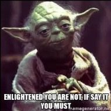

Recently I was asked, for about the zillionth time, if I’m enlightened.
What to say, what to say...
Both “yes” or “no” are lousy options.
Say no and I’m dismissed; the asker moves on to the next magician who has better sleight of hand than moi (pretty much everyone).
Say yes and… Oh! Hear the trumpets? See the confetti? Yay me! So special!
Hmmm. That couldn’t be ego and apparent confirmation of the superior, separate, individual self, right?
Uh oh.
Could be I don’t have what I’m claiming to have.
Plus, then the unenlightened questioner gets to compare what they supposedly don’t have, to what I supposedly do.
Confirming their own deficiency, lack and emptiness as an individual, while putting me on a pedestal of envy.
So my yes tidily confirms both of our senses of identity and personhoods, and neither of us sees through the self illusion.
Great.
Of course this assumes that we even agree on what enlightenment is, or that it can actually be attained.
Which most likely, we don’t.
After all, what most folks seek to “attain” is nonstop, permanent, never-reacts, bliss.
Even though no one- not even the sainted Ramana - has ever actually achieved said non-reactivity, permanently.
And even though “attaining” inherently means getting- as in, it’s missing and needs to be gotten.
Which means the present is lacking.
Which means, um… no.
But let’s pretend for a moment that everyone does agree on the definition of awakening.
Let’s say everyone knows that enlightenment is the actual experience that we are everything- every sound, every sensation, every color.
Not nothing, everything.
And let’s say everyone has truly seen that the world, self, seen objects, and felt senses, are 100% illusion, and that the constant, arbitrary establishment of a person, a location, a stance, doesn’t actually, in any way, exist.
Got it?
(checks watch) Transformed yet? Transcended yet?
Or is the usual desire for a better existence and a better experience, with better feelings, better knowledge, better awareness and better evolution, still alive and well?
Right.
Still, people do find comfort in grabbing onto some teacher’s words and then pretending to have experienced some of that claimed magic for themselves.
Though this makes them not enlightened, but parrots. And fakers. And rule-followers trying very hard to stay in the box and do things right.
As opposed to transcending the box.
Not that there’s anything wrong with this. It's just not a happy place for the seeker.
Because what is sought cannot be found this way. If it can be found at all.
Luckily not one bit of this matters.
Because the answer to, “Are you enlightened?” is a yes for everyone.
No one becomes enlightened, because everyone already is.
We are all, already, not the self.
Yes it’s true this isn’t “known.” But knowing involves the mind. Realizing involves the mind. ("Realize" = makes real = Not it)
So knowing isn't necessary, and changes nothing.
So… am I enlightened?
What’s asking? What cares? And whatever it is, does it need to attain this realization?
Nah. It’s complete already.
As are we all.
With or without
An Answer
To a useless question.
every week.
"What if you're a zombie right now and believing you're not is just one of the symptoms?"
--Jed McKenna
